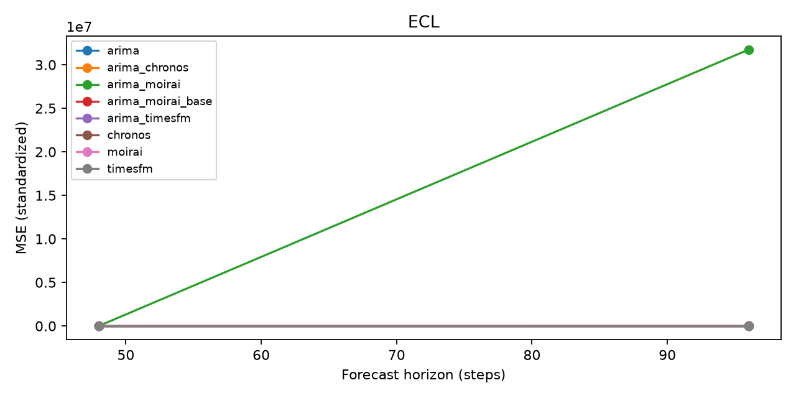
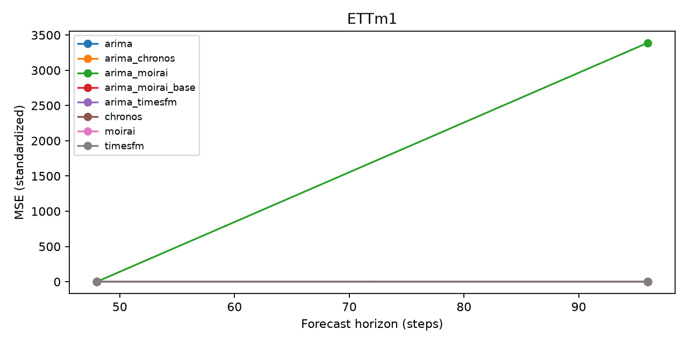
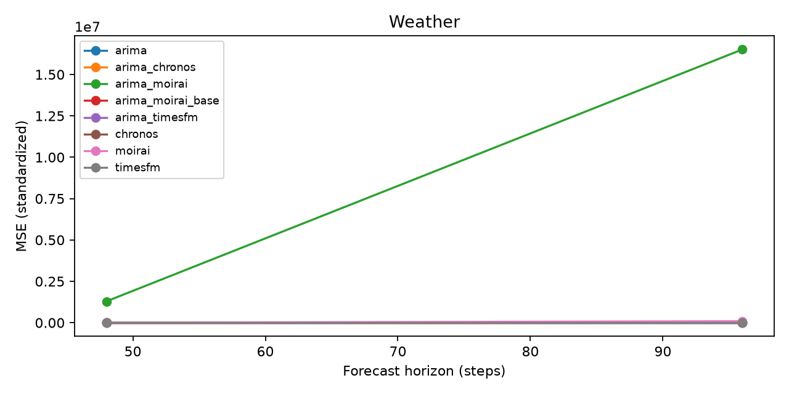

Run: all_models. Status: completed. Protocol: common.
MSE/MAE: train-standardized units. *_raw: original units. MASE: seasonal train scale. Coverage: nominal 80%. Hybrid intervals describe residual uncertainty conditional on the base point. Pilot/subset runs do not establish paper reproduction.
| dataset | model | horizon | seed | pilot | n_origins | mse | mae | mase | coverage_80 | width_80 | prediction_seconds | selection_seconds | peak_rss_mb | arima_nonconverged_fits |
|---|---|---|---|---|---|---|---|---|---|---|---|---|---|---|
| ETTm1 | arima | 48 | 0 | True | 16 | 0.773235 | 0.588188 | 1.40581 | NaN | NaN | 1.42201 | 3.38087 | 322.156 | 2 |
| ETTm1 | chronos | 48 | 0 | True | 16 | 0.204586 | 0.294888 | 0.684919 | 0.729911 | 0.847558 | 0.0935801 | 1.85908 | 469.734 | 0 |
| ETTm1 | timesfm | 48 | 0 | True | 16 | 0.197494 | 0.289333 | 0.672093 | 0.757068 | 0.881264 | 4.07869 | 4.74349 | 1753.03 | 0 |
| ETTm1 | arima_chronos | 48 | 0 | True | 16 | 0.713966 | 0.560533 | 1.33971 | 0.282366 | 0.402206 | 1.4458 | 1.34487 | 1391.74 | 2 |
| ETTm1 | arima_timesfm | 48 | 0 | True | 16 | 0.724823 | 0.565108 | 1.34978 | 0.290179 | 0.408777 | 4.40638 | 4.16921 | 1398.76 | 2 |
| ETTm1 | arima | 96 | 0 | True | 16 | 1.23072 | 0.637026 | 1.53827 | NaN | NaN | 1.49217 | 3.35508 | 1397.85 | 5 |
| ETTm1 | chronos | 96 | 0 | True | 16 | 0.26936 | 0.322828 | 0.774962 | 0.721168 | 0.895073 | 0.923442 | 1.05765 | 1458.75 | 0 |
| ETTm1 | timesfm | 96 | 0 | True | 16 | 0.292943 | 0.34354 | 0.810829 | 0.778832 | 1.06831 | 4.07502 | 3.98915 | 1456.46 | 0 |
| ETTm1 | arima_chronos | 96 | 0 | True | 16 | 1.15923 | 0.607877 | 1.468 | 0.270182 | 0.379055 | 2.0827 | 2.11048 | 1449.41 | 5 |
| ETTm1 | arima_timesfm | 96 | 0 | True | 16 | 1.17586 | 0.613403 | 1.4813 | 0.306641 | 0.440677 | 4.36996 | 4.29115 | 1448.23 | 5 |
| Weather | arima | 48 | 0 | True | 16 | 0.122477 | 0.17029 | 0.41485 | NaN | NaN | 5.58175 | 11.0852 | 1443.22 | 161 |
| Weather | chronos | 48 | 0 | True | 16 | 0.105679 | 0.15826 | 0.380493 | 0.766307 | 0.448193 | 0.282335 | 0.2846 | 1444.82 | 0 |
| Weather | timesfm | 48 | 0 | True | 16 | 0.0894562 | 0.135364 | 0.312755 | 0.770275 | 0.366571 | 12.2247 | 12.0959 | 1448.83 | 0 |
| Weather | arima_chronos | 48 | 0 | True | 16 | 0.122041 | 0.170274 | 0.415022 | 0.297743 | 0.10859 | 5.79091 | 5.69004 | 1441.33 | 161 |
| Weather | arima_timesfm | 48 | 0 | True | 16 | 0.120823 | 0.169816 | 0.413657 | 0.329365 | 0.129717 | 14.3673 | 14.0475 | 1447.78 | 161 |
| Weather | arima | 96 | 0 | True | 16 | 0.268654 | 0.255101 | 0.628223 | NaN | NaN | 5.46025 | 10.7594 | 1448.54 | 145 |
| Weather | chronos | 96 | 0 | True | 16 | 0.206767 | 0.220229 | 0.533253 | 0.702288 | 0.509912 | 2.71845 | 2.80108 | 1474.52 | 0 |
| Weather | timesfm | 96 | 0 | True | 16 | 0.187914 | 0.191833 | 0.444455 | 0.752542 | 0.451506 | 12.1718 | 12.2175 | 1476.08 | 0 |
| Weather | arima_chronos | 96 | 0 | True | 16 | 0.26985 | 0.255864 | 0.630191 | 0.231058 | 0.106541 | 7.3809 | 7.20419 | 1462.34 | 145 |
| Weather | arima_timesfm | 96 | 0 | True | 16 | 0.269123 | 0.255121 | 0.627914 | 0.288194 | 0.137213 | 14.0299 | 13.9487 | 1463.4 | 145 |
| ECL | arima | 48 | 0 | True | 16 | 0.832459 | 0.702905 | 2.7241 | NaN | NaN | 2.50897 | 6.03054 | 1446.56 | 3 |
| ECL | chronos | 48 | 0 | True | 16 | 0.263948 | 0.26075 | 0.992162 | 0.781006 | 0.775578 | 0.2167 | 0.213356 | 1445.06 | 0 |
| ECL | timesfm | 48 | 0 | True | 16 | 0.180829 | 0.242428 | 0.847032 | 0.803304 | 0.742095 | 9.30534 | 9.22682 | 1445.68 | 0 |
| ECL | arima_chronos | 48 | 0 | True | 16 | 0.634718 | 0.602842 | 2.33981 | 0.316732 | 0.714312 | 2.64426 | 2.55847 | 1438.96 | 3 |
| ECL | arima_timesfm | 48 | 0 | True | 16 | 0.649209 | 0.613775 | 2.36268 | 0.30249 | 0.603247 | 9.1254 | 8.97796 | 1443.5 | 3 |
| ECL | arima | 96 | 0 | True | 16 | 0.889622 | 0.737947 | 2.88882 | NaN | NaN | 2.51806 | 6.03603 | 1443.13 | 2 |
| ECL | chronos | 96 | 0 | True | 16 | 0.252772 | 0.282561 | 1.0444 | 0.748698 | 0.675145 | 2.18215 | 2.16167 | 1466.05 | 0 |
| ECL | timesfm | 96 | 0 | True | 16 | 0.245461 | 0.278758 | 1.02762 | 0.789591 | 0.774868 | 12.028 | 9.39281 | 1467.77 | 0 |
| ECL | arima_chronos | 96 | 0 | True | 16 | 0.716424 | 0.649401 | 2.52281 | 0.284342 | 0.604125 | 4.58146 | 4.6882 | 1458.1 | 2 |
| ECL | arima_timesfm | 96 | 0 | True | 16 | 0.736674 | 0.660247 | 2.56386 | 0.286662 | 0.606333 | 9.17022 | 8.94145 | 1456.95 | 2 |
| ETTm1 | arima_moirai_base | 48 | 0 | True | 16 | 0.77324 | 0.588192 | 1.40581 | NaN | NaN | 1.24403 | 3.16672 | 286.996 | 4 |
| ETTm1 | moirai | 48 | 0 | True | 16 | 0.693653 | 0.5043 | 1.19642 | 0.748326 | 1.41098 | 2.31413 | 3.53173 | 534.938 | 0 |
| ETTm1 | arima_moirai | 48 | 0 | True | 16 | 0.778177 | 0.579096 | 1.37883 | 0.313244 | 0.490849 | 2.88576 | 2.79662 | 542.316 | 4 |
| ETTm1 | arima_moirai_base | 96 | 0 | True | 16 | 1.2307 | 0.637024 | 1.53826 | NaN | NaN | 1.23961 | 2.86275 | 542.863 | 6 |
| ETTm1 | moirai | 96 | 0 | True | 16 | 0.946503 | 0.594552 | 1.41662 | 0.795294 | 1.90216 | 2.52912 | 2.49706 | 555.539 | 0 |
| ETTm1 | arima_moirai | 96 | 0 | True | 16 | 3388.57 | 2.08237 | 4.32556 | 0.359375 | 0.612909 | 3.14617 | 3.12957 | 556.422 | 6 |
| Weather | arima_moirai_base | 48 | 0 | True | 16 | 0.122474 | 0.170277 | 0.414822 | NaN | NaN | 5.06827 | 9.94658 | 565.48 | 155 |
| Weather | moirai | 48 | 0 | True | 16 | 0.500165 | 0.220113 | 0.57888 | 0.760603 | 0.522236 | 7.06719 | 7.09533 | 565.484 | 0 |
| Weather | arima_moirai | 48 | 0 | True | 16 | 1.29078e+06 | 27.9879 | 125.15 | 0.341766 | 0.442564 | 9.99745 | 10.0262 | 557.184 | 155 |
| Weather | arima_moirai_base | 96 | 0 | True | 16 | 0.268656 | 0.2551 | 0.62821 | NaN | NaN | 4.99325 | 9.60476 | 561.172 | 138 |
| Weather | moirai | 96 | 0 | True | 16 | 92286.5 | 2.25374 | 5.75611 | 0.732701 | 0.676727 | 7.61088 | 7.6179 | 572.438 | 0 |
| Weather | arima_moirai | 96 | 0 | True | 16 | 1.65128e+07 | 111.247 | 390.908 | 0.295232 | 0.829504 | 10.506 | 10.5125 | 574.176 | 138 |
| ECL | arima_moirai_base | 48 | 0 | True | 16 | 0.832459 | 0.702905 | 2.7241 | NaN | NaN | 2.25835 | 5.31703 | 566.371 | 4 |
| ECL | moirai | 48 | 0 | True | 16 | 20.3524 | 0.454822 | 2.08668 | 0.821615 | 1.171 | 6.7647 | 5.38374 | 567.238 | 0 |
| ECL | arima_moirai | 48 | 0 | True | 16 | 988.4 | 1.53889 | 6.56323 | 0.400635 | 1.01611 | 7.40333 | 7.62439 | 567.223 | 4 |
| ECL | arima_moirai_base | 96 | 0 | True | 16 | 0.889622 | 0.737947 | 2.88882 | NaN | NaN | 2.45928 | 5.88879 | 568.797 | 1 |
| ECL | moirai | 96 | 0 | True | 16 | 3534.53 | 1.35424 | 9.1823 | 0.827596 | 1.22288 | 7.24119 | 7.24555 | 568.797 | 0 |
| ECL | arima_moirai | 96 | 0 | True | 16 | 3.17387e+07 | 117.441 | 921.172 | 0.415527 | 2.67172 | 7.99817 | 7.79463 | 567.438 | 1 |
| dataset | model | context | horizon | protocol | pilot | seeds | mse_mean | mse_std | mae_mean | mase_mean |
|---|---|---|---|---|---|---|---|---|---|---|
| ECL | arima | 336 | 48 | common | True | 1 | 8.324586e-01 | NaN | 0.702905 | 2.724103 |
| ECL | arima | 336 | 96 | common | True | 1 | 8.896216e-01 | NaN | 0.737947 | 2.888816 |
| ECL | arima_chronos | 336 | 48 | common | True | 1 | 6.347183e-01 | NaN | 0.602842 | 2.339812 |
| ECL | arima_chronos | 336 | 96 | common | True | 1 | 7.164237e-01 | NaN | 0.649401 | 2.522814 |
| ECL | arima_moirai | 336 | 48 | common | True | 1 | 9.884002e+02 | NaN | 1.538887 | 6.563229 |
| ECL | arima_moirai | 336 | 96 | common | True | 1 | 3.173865e+07 | NaN | 117.441097 | 921.171729 |
| ECL | arima_moirai_base | 336 | 48 | common | True | 1 | 8.324587e-01 | NaN | 0.702905 | 2.724104 |
| ECL | arima_moirai_base | 336 | 96 | common | True | 1 | 8.896217e-01 | NaN | 0.737947 | 2.888817 |
| ECL | arima_timesfm | 336 | 48 | common | True | 1 | 6.492092e-01 | NaN | 0.613775 | 2.362682 |
| ECL | arima_timesfm | 336 | 96 | common | True | 1 | 7.366741e-01 | NaN | 0.660247 | 2.563857 |
| ECL | chronos | 336 | 48 | common | True | 1 | 2.639483e-01 | NaN | 0.260750 | 0.992162 |
| ECL | chronos | 336 | 96 | common | True | 1 | 2.527720e-01 | NaN | 0.282561 | 1.044398 |
| ECL | moirai | 336 | 48 | common | True | 1 | 2.035243e+01 | NaN | 0.454822 | 2.086675 |
| ECL | moirai | 336 | 96 | common | True | 1 | 3.534532e+03 | NaN | 1.354241 | 9.182301 |
| ECL | timesfm | 336 | 48 | common | True | 1 | 1.808288e-01 | NaN | 0.242428 | 0.847032 |
| ECL | timesfm | 336 | 96 | common | True | 1 | 2.454613e-01 | NaN | 0.278758 | 1.027625 |
| ETTm1 | arima | 336 | 48 | common | True | 1 | 7.732351e-01 | NaN | 0.588188 | 1.405806 |
| ETTm1 | arima | 336 | 96 | common | True | 1 | 1.230718e+00 | NaN | 0.637026 | 1.538268 |
| ETTm1 | arima_chronos | 336 | 48 | common | True | 1 | 7.139658e-01 | NaN | 0.560533 | 1.339713 |
| ETTm1 | arima_chronos | 336 | 96 | common | True | 1 | 1.159235e+00 | NaN | 0.607877 | 1.468001 |
| ETTm1 | arima_moirai | 336 | 48 | common | True | 1 | 7.781768e-01 | NaN | 0.579096 | 1.378826 |
| ETTm1 | arima_moirai | 336 | 96 | common | True | 1 | 3.388570e+03 | NaN | 2.082369 | 4.325563 |
| ETTm1 | arima_moirai_base | 336 | 48 | common | True | 1 | 7.732400e-01 | NaN | 0.588192 | 1.405815 |
| ETTm1 | arima_moirai_base | 336 | 96 | common | True | 1 | 1.230702e+00 | NaN | 0.637024 | 1.538264 |
| ETTm1 | arima_timesfm | 336 | 48 | common | True | 1 | 7.248232e-01 | NaN | 0.565108 | 1.349778 |
| ETTm1 | arima_timesfm | 336 | 96 | common | True | 1 | 1.175858e+00 | NaN | 0.613403 | 1.481295 |
| ETTm1 | chronos | 336 | 48 | common | True | 1 | 2.045859e-01 | NaN | 0.294888 | 0.684919 |
| ETTm1 | chronos | 336 | 96 | common | True | 1 | 2.693600e-01 | NaN | 0.322828 | 0.774962 |
| ETTm1 | moirai | 336 | 48 | common | True | 1 | 6.936528e-01 | NaN | 0.504300 | 1.196419 |
| ETTm1 | moirai | 336 | 96 | common | True | 1 | 9.465033e-01 | NaN | 0.594552 | 1.416623 |
| ETTm1 | timesfm | 336 | 48 | common | True | 1 | 1.974943e-01 | NaN | 0.289333 | 0.672093 |
| ETTm1 | timesfm | 336 | 96 | common | True | 1 | 2.929434e-01 | NaN | 0.343540 | 0.810829 |
| Weather | arima | 336 | 48 | common | True | 1 | 1.224767e-01 | NaN | 0.170290 | 0.414850 |
| Weather | arima | 336 | 96 | common | True | 1 | 2.686544e-01 | NaN | 0.255101 | 0.628223 |
| Weather | arima_chronos | 336 | 48 | common | True | 1 | 1.220408e-01 | NaN | 0.170274 | 0.415022 |
| Weather | arima_chronos | 336 | 96 | common | True | 1 | 2.698497e-01 | NaN | 0.255864 | 0.630191 |
| Weather | arima_moirai | 336 | 48 | common | True | 1 | 1.290780e+06 | NaN | 27.987931 | 125.149511 |
| Weather | arima_moirai | 336 | 96 | common | True | 1 | 1.651283e+07 | NaN | 111.247202 | 390.908413 |
| Weather | arima_moirai_base | 336 | 48 | common | True | 1 | 1.224745e-01 | NaN | 0.170277 | 0.414822 |
| Weather | arima_moirai_base | 336 | 96 | common | True | 1 | 2.686555e-01 | NaN | 0.255100 | 0.628210 |
| Weather | arima_timesfm | 336 | 48 | common | True | 1 | 1.208235e-01 | NaN | 0.169816 | 0.413657 |
| Weather | arima_timesfm | 336 | 96 | common | True | 1 | 2.691225e-01 | NaN | 0.255121 | 0.627914 |
| Weather | chronos | 336 | 48 | common | True | 1 | 1.056790e-01 | NaN | 0.158260 | 0.380493 |
| Weather | chronos | 336 | 96 | common | True | 1 | 2.067670e-01 | NaN | 0.220229 | 0.533253 |
| Weather | moirai | 336 | 48 | common | True | 1 | 5.001647e-01 | NaN | 0.220113 | 0.578880 |
| Weather | moirai | 336 | 96 | common | True | 1 | 9.228649e+04 | NaN | 2.253743 | 5.756113 |
| Weather | timesfm | 336 | 48 | common | True | 1 | 8.945623e-02 | NaN | 0.135364 | 0.312755 |
| Weather | timesfm | 336 | 96 | common | True | 1 | 1.879137e-01 | NaN | 0.191833 | 0.444455 |



[]